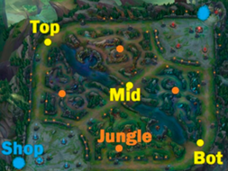

Carril Superior: Es la linea donde se suele jugar con el tanque o el luchador del equipo, en alguna ocasion se suele jugar con un camperon que ataque a distancia para asi poder perjudicar al rival, ya que todos los campeones que se juegan en esta linea suele atacar desde cerca. Esta linea se encuentra en la parte superior del mapa
Jungla: En el mapa que se llama la grieta del invocador entre las lineas existen criaturas neutrales que dan oro y experiencia al matarlas, este lugar se le llama jungla y es donde juega este jugador, esta clase de campeones sulen ser muy diversa su funcion en el equipo consiste en ayudar a el resto de lineas si se encuentran en apuros y matar objetivos que dan una mejora para todo su equipo para obtener ventajas contra los rivales.
Carril central: Esta linea se encuentra en el medio del mapa y esta rodeada por la jungla. Es el camino mas rapido para llegar a la base enemiga lo cual lo hace un lugar de mucha importancia ya que aqui sucederan la mayoria de las batallas entre los dos equipis y ser el lugar donde mas venga los junglas para asegurar una ventaja a su equipo.
Carril inferior: Esta linea se encuentra el la zona mas baja del mapa, esta linea se juega con dos jugadores en ella evez de el unico jugador como en el resto de lineas, aqui existen los ADC y los soportes, el ADC es el daño del equipo suelen ser personajes de rango que hacen mucho daño en plazo corto de tiempo, los soporte se encargan de apoyar al ADC para que pueda jugar de manera adecuada ya que los ADC no suelen tener mucha vida y no aguantan tanto en peleas como el resto del equipo

Clases y tipos de campeones
Luchadores: Los Luchadores son campeones combatientes especialistas en el corto alcance o melee.
Destacan por su daño alto y su resistencia en combate
La mayoria son mejores en combates largos y su especialidad es en derribar a enemigos
Para esten equilibrados su puntos debiles son los campeones a distancia
Tiradores: Los Tiradores son campeones especializadon en ataques a distancia.
Se aprovechan de su largo alcance para causar daño continuo y masivo desde posiciones seguras.
Se suelen colocar tras la seguridad de sus compañeros de equipo para maximizar su daño
Para esten equilibrados son extremadamente vulnerables a daño muy consecutivo y en los inicios de las partidas
Magos: Los Magos son campeones enfocados en el gran alcance por norma general, que además poseen capacidades de daño en área gracias a sus habilidades y control de masas.
Utilizan habilidades con daño en área y control de masas para atrapar y derrotar enemigos desde la distancia
Invierten en objetos que le permiten lanzar hechizos más fuertes y rápidos
Tienden a ser difíciles de manejar y requieren buena puntería para acertar habilidades
Asesinos: Los Asesinos son campeones enfocados en el daño de ráfaga a un solo objetivo.
Altamente móviles, eliminan objetivos prioritarios rápidamente y evitan encuentros igual de rápido
Representan el estilo de juego de alto riesgo y alta recompensa
Son oportunistas que, preferentemente, atacan a sus objeticos cuando se encuentren solos
Tanques: Los Tanques son campeones preparados para ejercer como los defensas de un equipo.
Su objetivo no es tanto matar rivales, sino desviar el foco de los ataques hacia ellos para jugar como "esponjas de daño entrante"
Sacrifican su daño a cambio de un gran control de masas
Se dedican a desestabilizar a los rivales, bloquear objetivos específicos y eliminar amenazadas para los aliados
Están limitados a una baja movilidad
Soportes: Los Soportes son campeones que están diseñados para ayudar a sus aliados con una potente utilidad y al mismo tiempo mantener a raya a los enemigos con el control de multitudes.
Son capaces de amplificar enormemente el poder de sus compañeros de equipo para convertirse en la clase más fuerte en combate grupal
Proporcionan utilidad crucial o control de masas en momentos difíciles
Suelen comenzar ayudando al tirador en el carril, pero con el tiempo su ayuda se expande al resto del equipo